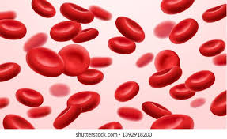

RED BLOOD CELL

Red blood cells or erythrocytes, primarily carry oxygen and collect carbon dioxide through the use of hemoglobin. Hemoglobin is an iron-containing protein that gives red blood cells their color and facilitates transportation of oxygen from the lungs to tissues and carbon dioxide from tissues to the lungs to be exhaled. Red blood cells are the most abundant cell in the blood, accounting for about 40-45% of its volume. Red blood cells are circular, biconcave, disk-shaped and deformable to allow them to squeeze through narrow capillaries. They do not have a nucleus. Red blood cells are much smaller than most other human cells.
RBCs are formed in the red bone marrow from hematopoietic stem cells in a process known as erythropoiesis. In adults, about 2.4 million RBCs are produced each second. The normal RBCs count is 4.5 to 5 millions per cu.mm. RBCs have a lifespan of approximately 100-120 days. After they have completed their lifespan, they are removed from the bloodstream by the spleen.
Mature red blood cells are unique among cells in the human body in that they lack a nucleus (although erythroblasts do have a nucleus).
The condition of having too few red blood cells is known as anemia, while having too many is polycythemia.
Erythrocyte sedimentation rate (ESR) is the rate at which RBCs sink to the bottom (when placed in a vertical column after adding an anticoagulant). Normal values of ESR are:
3 to 5 mm per hour in males.
4 to 7 mm per hour in females.